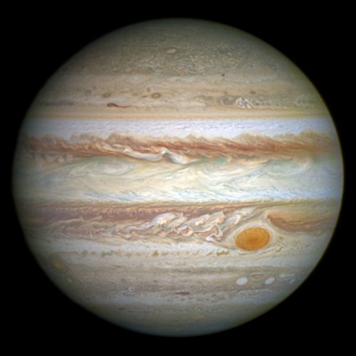
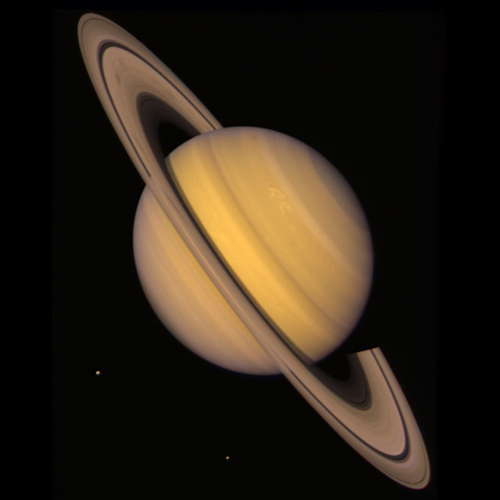

The Jovian Planets
| Name |
Jupiter |
Saturn |
Uranus |
Neptune |
| Picture |
 |
 |
 |
|
| Mass (kg) |
1.90 x 1027 |
5.69 x 1026 |
8.68 x 1025 |
1.02 x 1026 |
| Diameter (km) |
142,000 |
120,660 |
51,118 |
49,528 |
| Mean Density (kg/m3) |
1,314 |
690 |
1,290 |
1,640 |
| Escape Velocity (m/s) |
59,500 |
35,600 |
21,300 |
23,300 |
| Average distance from Sun |
5.203 AU (788,412,020 km) |
9.537 AU (1,426,725,400 km) |
19.19 AU (2,870,972,200 km) |
30.07 AU (4,498,252,900 km) |
| Rotation period (days) |
0.41 (9.8 hours) |
0.44 (10.2 hours) |
0.72 (17.9 hours) |
0.67 (19.1 hours) |
| Revolution period (years) |
11.86 |
29.46 |
84 |
164.8 |